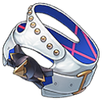
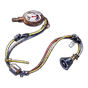

추천 광추
두 번째 생명을 향해
격특 +60% · 격파 방어력 무시 20%
효과 자세히
전투 격특 150% 이상 → 속도 +12%.
논검
같은 적 명중당 피해 +16%
효과 자세히
최대 5스택 +80%. 공격 대상을 바꾸면 초기화.
별바다 순항
치확 +16% · 처치 시 공격력 +40%
효과 자세히
적 HP 50% 이하 → 추가 치확 +16%. 적 처치 시 공격력 증가 2턴.
침묵만이
공격력 +32% · 치확 +24%
효과 자세히
치확은 필드의 적 2기 이하 조건.
추천 유물
스트리트 격투왕 4 · 창공 전선 그라모스 2
- 머리
 주옵션HP부옵션치명타 확률 · 치명타 피해 · 속도 · 공격력% · 격파 특수효과
주옵션HP부옵션치명타 확률 · 치명타 피해 · 속도 · 공격력% · 격파 특수효과 - 손
 주옵션공격력부옵션치명타 확률 · 치명타 피해 · 속도 · 공격력% · 격파 특수효과
주옵션공격력부옵션치명타 확률 · 치명타 피해 · 속도 · 공격력% · 격파 특수효과 - 몸통
 주옵션치명타 확률 / 치명타 피해부옵션치명타 확률 (주옵션 제외) · 치명타 피해 (주옵션 제외) · 속도 · 공격력% · 격파 특수효과
주옵션치명타 확률 / 치명타 피해부옵션치명타 확률 (주옵션 제외) · 치명타 피해 (주옵션 제외) · 속도 · 공격력% · 격파 특수효과 - 다리
 주옵션속도 / 공격력%부옵션치명타 확률 · 치명타 피해 · 속도 (주옵션 제외) · 공격력% (주옵션 제외) · 격파 특수효과
주옵션속도 / 공격력%부옵션치명타 확률 · 치명타 피해 · 속도 (주옵션 제외) · 공격력% (주옵션 제외) · 격파 특수효과 - 구체
 주옵션물리 속성 피해부옵션치명타 확률 · 치명타 피해 · 속도 · 공격력% · 격파 특수효과
주옵션물리 속성 피해부옵션치명타 확률 · 치명타 피해 · 속도 · 공격력% · 격파 특수효과 - 매듭
 주옵션공격력%부옵션치명타 확률 · 치명타 피해 · 속도 · 격파 특수효과
주옵션공격력%부옵션치명타 확률 · 치명타 피해 · 속도 · 격파 특수효과
이 조합을 추천하는 이유
격투왕 공격·피격으로 공격력 최대 +25%. 그라모스 전투 속도 135/160 조건.
유성을 쫓는 괴도 4 · 도적국 탈리아 2
- 머리
 주옵션HP부옵션속도 · 격파 특수효과 · 치명타 확률 · 치명타 피해 · 공격력%
주옵션HP부옵션속도 · 격파 특수효과 · 치명타 확률 · 치명타 피해 · 공격력% - 손
 주옵션공격력부옵션속도 · 격파 특수효과 · 치명타 확률 · 치명타 피해 · 공격력%
주옵션공격력부옵션속도 · 격파 특수효과 · 치명타 확률 · 치명타 피해 · 공격력% - 몸통

주옵션치명타 확률 / 치명타 피해부옵션속도 · 격파 특수효과 · 치명타 확률 (주옵션 제외) · 치명타 피해 (주옵션 제외) · 공격력% - 다리
 주옵션속도부옵션격파 특수효과 · 치명타 확률 · 치명타 피해 · 공격력%
주옵션속도부옵션격파 특수효과 · 치명타 확률 · 치명타 피해 · 공격력% - 구체
 주옵션물리 속성 피해 / 공격력%부옵션속도 · 격파 특수효과 · 치명타 확률 · 치명타 피해 · 공격력% (주옵션 제외)
주옵션물리 속성 피해 / 공격력%부옵션속도 · 격파 특수효과 · 치명타 확률 · 치명타 피해 · 공격력% (주옵션 제외) - 매듭

주옵션격파 특수효과부옵션속도 · 치명타 확률 · 치명타 피해 · 공격력%
이 조합을 추천하는 이유
괴도 격특 +32% · 직접 격파 후 에너지 +3pt. 탈리아 전투 속도 145 → 격특 합계 +36%.
이 정도면 잘 키웠다
선택한 세팅 기준 · —는 확인된 수치 없음
공격력과 치명타를 높이는 4.7 시트 기준입니다.
| 스탯 | 추천 스탯 | 준종결 | 종결 |
|---|---|---|---|
| 공격력 | 3000 | — | — |
| 치명타 확률 | 80% | — | — |
| 치명타 피해 | 120% | — | — |
성혼과 추천 돌파
1돌 격파 적 스킬 포인트 반환 · 4돌 격특 +40%.
1격파된 적에 스킬 → SP +1pt추천
여유만만
2검세 발동 → 받는 피해 −20%
1턴.
3필살기·특성 +2
필살기·특성 레벨 상한 각각 15.
4격파 특수효과 +40%추천
넓은 아량
5전투 스킬 +2 · 일반 공격 +1
스킬·일반 공격 레벨 상한 각각 15·10.
6특성 가속 최대 2스택
전투 시작 시 가속 1스택 제공.
추천 파티


기본 운영과 행적
스킬·필살기·스킬로 격파 구간 사용
격파된 적에게 전투 스킬 → 필살기로 즉시 행동 → 추가 전투 스킬.
- 1돌은 격파된 적에 스킬을 써야 SP 반환. 격파 전에 먼저 맞히면 포인트를 소모.
행적 육성 순서
전투 스킬 → 필살기 → 특성 → 일반 공격
아하 속도 계산기 →기준과 출처 · 2026-11-27
4.7 데이터 · Prydwen 장비 참고 · 자료실 편성 예시